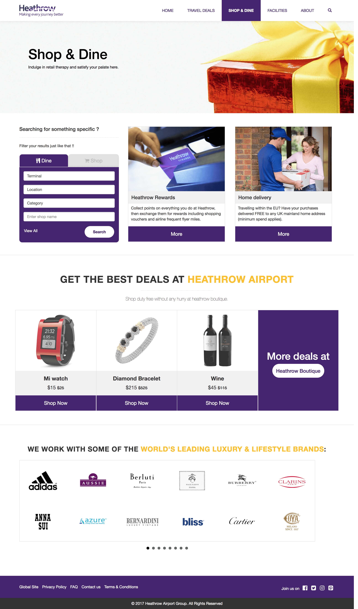
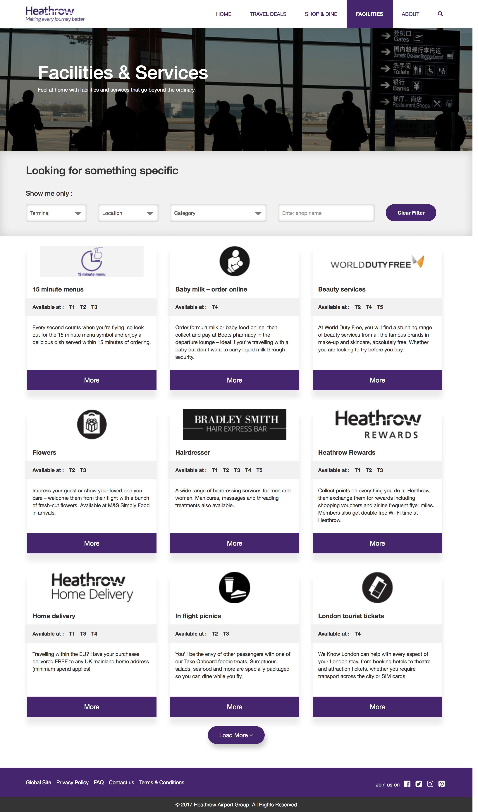
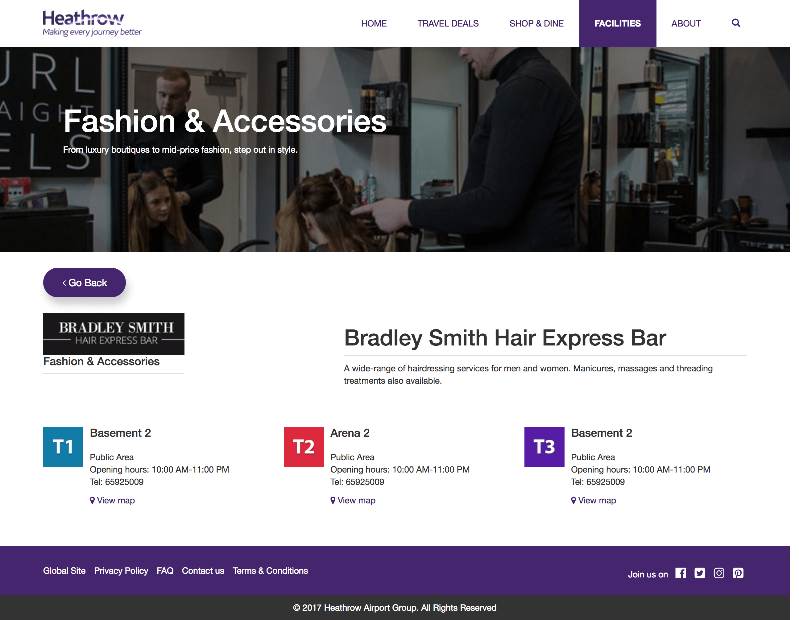

London Heathrow Airport Website - Redesign
Problem statement
Sunny Britto is a digital marketing professional who has been in London for 3 days on work. The hotel he's staying at has a strict check-out policy - he would have to pay extra if he doesn't check out after 10:00 am.
His return flight to Mumbai from London Heathrow is at 5:00 pm, he is expected to report at the airline counter around 3 pm. Which leaves him with 3 hours to kill. 3 hours is not enough for him to catch any sights in London.
So, he's left with only one option - spending that time at the airport. Maybe a good opportunity to buy souvenirs for his family, some booze from the duty free and grab a quick bite before he checks-in.
He has a wife & 1-year-old son and he loves Japanese food.
Aim
The Aim is to design a set of airport information pages (web pages) or a microsite which is responsive and caters to his needs, so he can look information about the Heathrow airport to maximise those 3 hours.
How I solved
There are certain steps which I've followed to make things happen -
-
Research: The beginning of everything: target audience, goals, tasks, context, meaningful requirements, etc.
-
IxD & Wireframing: Affordances, cues, CTAs, visual elements
-
Design and Prototype: While designing a product I make sure that it's pixel perfect and the flow is clean enough so that even a kid could navigate through the interface. Once I'm satisfied with what I've designed, I Prototype either on Invision or on my personal favorite HTML/CSS
-
Research: The beginning of everything: target audience, goals, tasks, context, meaningful requirements, etc.
Solution
For the solution I had created a responsive microsite(Combinaion of 9 web pages). That caters the needs of the user waiting at the airport so that he can look information about the Heathrow Airport, buy some souvenirs for his family, some booze from the duty free grabs a bite before he checks-in.
The Homepage
My idea behind the homepage is to provide as much as information about the Heathrow airport like, the shopping, facilities, ticket offers, Dinner and drinks,etc.
It contains a set of sections providing information or service related to the section.
Ticket offers section provides special offers/deals that a user can avail when they book directly through heathrow.
Boutique section at the bottom helps the user to pre-book the order and easily collect it before the flight takes off.

Shop and dine Page
This page contains a custom filter that actually works as an elastic search. All you need to do is choose a tab and further sub-filters in that tab i.e. Terminal(T1, T2, T3), Location(Before Security, After Security), Category(Superfast lunch, Cheap Dine, Luxury Dines) and Search by keyword. It saves time of browsing all the shops and eating places by shrinking down the search results.

Shopping directory page
Contains a set of cards containing information about miltiple shops. These cards also show the terminals information i.e. we can check if the store is available near your terminal or not. If the user is looking for something specific then he can also use the custom filters to refine results and save time.

Shop/store information page
Detailed information about any shop. You can also check the avalibility of the store on different terminals.

Thanks for reading
See All Projects